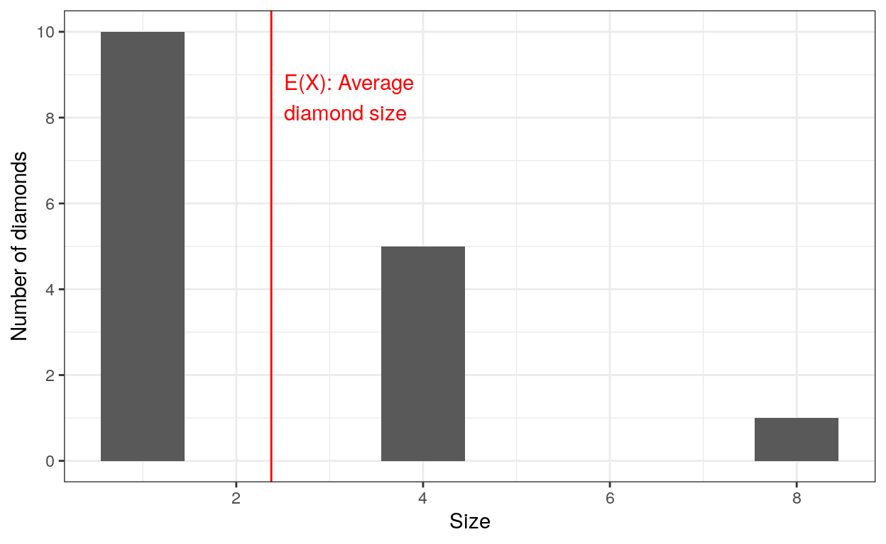
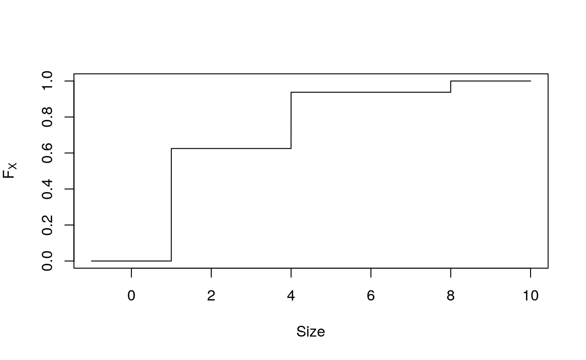
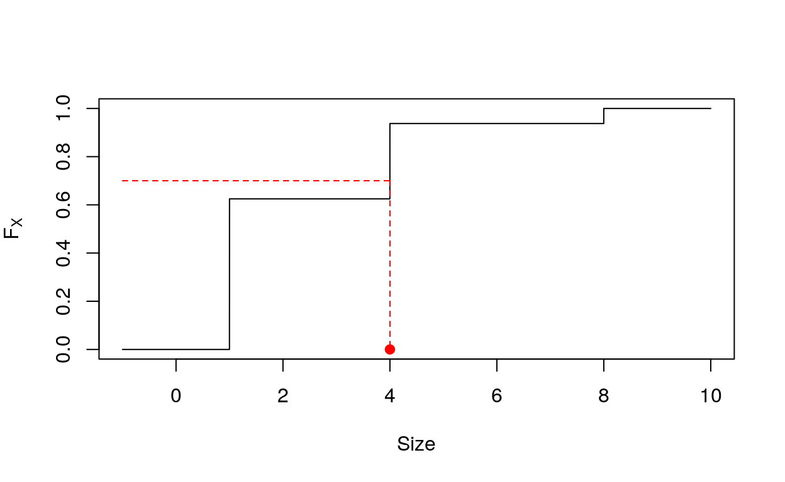

Welcome to this class
Learning goals
The goal of this class is to provide a numerical illustration of random variables and their properties. Unless specified otherwise, all the artworks used here are by the awesome @allison_horst whose work you can find here. We’ll review basic concepts and show how you can compute them using R. Specifically, you’ll learn about:
- random variables
- sampling
- descriptors of the random variables
Random variables
Overview
You can think of a random variable as a variable whose values depend on outcomes of a random phenomenon.
A very simple example is the throw of a (standard) dice. It can take any value in \(\{1, 2, 3, 4, 5, 6\}\) but you don’t known which one until you actually throw the dice.
Another one is the weight of an adult human. It can take any value between 2.1 and 635 kilograms (those are the actual docuemented world records) yet you don’t known which one until you pick the actual adult.
In the next section, we’ll classify the different types of random variables
Discrete versus continuous

Discrete versus continuous variables
In many examples, even if a variables is not strictly continuous, it makes sense to sense to consider it as continuous.
For example, in the previous example about weight, the weight of a human at a given time can only take \(\sim\) 5 billions values are there only \(\sim\) 5 billions living adults. Yet, it is a lot more convenient to think of it as continuous.
Note also that a variable can be discrete but still take infinitely many values. If you note \(X\) the number of throws of a single coin it takes to observe a head, \(X\) can take any value in \(\mathbb{N}^\star\).
Binary, Ordinal, Nominal
Discrete variables don’t need to be numeric, as illustrated below.

Discrete variables
Ordinal values are ordered and can often be recoded naturally using a numeric scale:
- I’m unhappy. \(\rightarrow 0\)
- I’m OK. \(\rightarrow 1\)
- I’m awesome. \(\rightarrow 2\)
You can also recode nominal nominal variables on a numeric scale but this is quite arbitrary
- Turtle \(\rightarrow 0\) (why?)
- Snail \(\rightarrow 1\) (why?)
- Butterfly \(\rightarrow 2\) (why?)
Binary values are a special case as they can always be recoded to \(0\) and \(1\):
- Extinct \(\rightarrow 0\)
- Not extinct \(\rightarrow 1\)
In that last case, we don’t need to think of 1 as being greater than 0, it’s just not the same.
Coding random variables
We’ve seen previously that different random variables can be encoded using different datatypes. In practice, we’re only going to use numeric and factor:
numericwhen the random variable can be expressed on a numeric scale or replaced by numeric scale (continuous and ordinal/binary when we don’t care about the labels)factorotherwise (nominal and ordinal/binary when we care about the labels)
Sampling
Overview
Let’s move back to our dice example. If the dice is fair, when we throw the dice once, we’re equally likely to get \(1, 2, \dots, 6\). A simple way to mimick this in R is with the sample() function.
Look at the help of sample() using ?sample() (possibly in another session) and complete the following code to throw a dice in your computer. Repeat multiple times and try to understand what happens.
sample(, size = 1)sample(x = 1:6, size = 1) ## remember that 1:6 is a shortcut for c(1, 2, 3, 4, 5, 6)Multiple throws
Imagine now that you want to mimick mutiple throws.
- You choose one value between \(1\) and \(6\) uniformly at random for the first throw. Let’s say you end up with \(3\).
- You then pick again one value between at random between \(1\) and \(6\) but you still have access to \(3\).
This is called sampling with replacement.
Complete the code to generate a sample of 10 dice throws using sample().
sample()"Look at the size argument. What value should it take?""Look at the replace argument. What value should it take?"sample(x = 1:6, size = 10, replace = TRUE)Diamonds in a jar
Let’s consider a different example. Imagine a jar filled with diamonds of different sizes. The jar contains:
- 10 diamonds of size 1
- 5 diamonds of size 4
- 1 diamond of size 8
Using the function rep() (look at the help to see how it works), create a vector jar that encodes the content of the jar. Each element of jar should be a diamond and jar[i] should be the size of the \(i\)-th diamond.
One solution would be jar <- c(1, 1, 1, 1, 1, 1, 1, 1, 1, 1, 4, 4, 4, 4, 4, 8) but we want to do less typing.
jar <- rep()"Look at the examples and the \"times\" arguments"jar <- rep(c(1, 4, 8), times = )Complete the code to draw one diamond from the jar.
jar <- rep()
first_diamond <- sample(x = , size = )jar <- rep(c(1, 4, 8), times = c(10, 5, 1))
first_diamond <- sample(x = jar, size = 1)Imagine that you were lucky and picked the big diamond (the one of size 8) during your first draw.
Write the code to draw a second diamond from the jar.
jar <- rep()
second_diamond <- sample(x = , size = )"Think carefully about the current content of the jar"jar <- rep(c(1, 4), times = c(10, 5))
second_diamond <- sample(x = , size = )jar <- rep(c(1, 4), times = c(10, 5))
second_diamond <- sample(x = jar, size = 1)Diamonds in a jar (II)
The previous example illsutrated sampling without replacement: the first draw modifies the content of the jar and hence, the second draw.
We drew two diamonds (first_diamond and second_diamond) sequentially but you can do it all at once using sample(). Try to do it by completing the following code:
jar <- rep(c(1, 4, 8), times = c(10, 5, 1))
first_and_second_diamonds <- sample(x = jar, )jar <- rep(c(1, 4, 8), times = c(10, 5, 1))
first_and_second_diamonds <- sample(x = jar, size = 2, replace = FALSE)Finite versus infinite populations
The biggest difference between finite populations (diamonds) and infinite populations (dice throws) is that you can throw a dice infinitely many times but you run out of diamonds at some point.
In particular:
- the results of 10 dice throws are likely to differ whereas
- you end up with the exact same diamonds if you pick 16 diamonds from the previous jar (although you may pick them in differnt orders).
Futhermore, whenever the random variable is associated to a finite population, it is discrete. Indeed if the population has size \(N\), the random variables takes at most \(N\) different values (and often less than that, as in our diamond example).
Descriptors of random variables
Overview
We’re going to illustrate the notions of
- Probability distribution
- Expectation
- Standard deviation
- Cumulative distribution function
on finite populations using our diamonds in a jar example. Those concepts can be extended to infinite populations (or equivalently random variables that can take infinitely many values) but we’ll leave that for later.
Hereafter, we note \(X\) (the random variable corresponding to) the size of a diamond picked at random from the jar.
Probability distribution
Theory
The set of all possible values for \(X\) (i.e. diamond sizes) is noted \(\Omega = \{x_1, x_2, x_3\}\).
The probability distribution function (or pdf) of \(X\) if the function: \[ x \in \Omega \mapsto \mathbb{P}(X = x) \] which associates to each diamond size the probability of picking a diamond of that size.
There is no straighforward way to build the pdf of \(X\) (there is for standard random variables). You can however build a related quantity: the frequency of different diamond sizes in the full populations using table()
## jar
## 1 4 8
## 10 5 1We consider a larger jar, whose content is stored in large_jar and note \(Y\) the size of a diamond picked at random from the large jar.
large_jar [1] 1 9 1 3 1 9 9 3 3 9 9 1 1 1 3 3 3 3 9 1 9 1 1 1 1 3 1 1 3 3 3 1 9 1 9 3 3
[38] 3 3 9 3 1 9 3 1 1 9 3 3 9 9 3 3 3 3 1 3 3 3 3 1 9 9 3 9 9 3 9 9 1 1 1 1 9
[75] 3 9 1 1 3 1 1 1 1 9 3 1 1 9 9 9 3 3 3 9 3 3 9 9 9 1 3 3 1 9 9 3 9 3 1 3 1
[112] 9 9 1 3 1 9 3 9 9 1 1 3 3 3 1 1 1 3 1 9 3 9 9 3 9 9 1 1 3 3 1 3 9 9 9 9 9
[149] 1 9 1 9 3 1 9 1 3 1 3 3 3 9 1 3 9 9 9 9 3 9 1 9 1 3 3 3 9 1 1 1 9 9 1 1 3
[186] 3 3 9 3 1 9 1 3 1 9 1 1 9 9 1table(large_jar)Use table() in the previous chunck to answer the following questions:
Expectation
The expectation of a random variable \(X\), noted \(\mathbb{E}(X)\), is its average value. Assume that \(X\) is associated to a population of size \(N\) and that individual \(i\) has value \(x_i\), so that
- \(X = x_i\) whenever you pick individual \(i\).
- \(\mathbb{P}(X = x)\) is the fraction of individuals with value \(x\), i.e. \(\frac{\#\{i \text{ such that } x_i = x\}}{N}\)
You can compute it using a formula based either on the full set of values \((x_i)_{i = 1\dots N}\) : \[ \mathbb{E}(X) = \frac{1}{N}\sum_{i = 1}^N x_i \] or the probability distribution: \[ \mathbb{E}(X) = \sum_{x \in \Omega} x \mathbb{P}(X = x) \]
In our (small) jar example, the first formula gives: \[ \mathbb{E}(X) = \frac{1}{16} \left( \underbrace{1 + \dots + 1}_{\times 10} + \underbrace{4 + \dots + 4}_{\times 5} + \underbrace{8}_{\times 1} \right) = 2.375 \]
You can of course simplify it to the second formula \[ \mathbb{E}(X) = 1 \times \underbrace{\frac{10}{16}}_{\mathbb{P}(X = 1)} + 4 \times \underbrace{\frac{5}{16}}_{\mathbb{P}(X = 4)} + 8 \times \underbrace{\frac{1}{16}}_{\mathbb{P}(X = 8)} = 2.375 \] and obtain the same result.
Graphically we have: 
Look at the functions sum() and length() and compute \(\mathbb{E}(Y)\) using the first formula
sum_of_y <-
length_of_y <-
expectation_of_y <-
expectation_of_y sum_of_y <- sum(y)
length_of_y <-
expectation_of_y <-
expectation_of_y sum_of_y <- sum(y)
length_of_y <- length(y)
expectation_of_y <-
expectation_of_y sum_of_y <- sum(y)
length_of_y <- length(y)
expectation_of_y <- sum_of_y / length_of_y
expectation_of_y Now look at mean() and suggest an alternative way of computing \(\mathbb{E}(Y)\).
expectation_of_y <-
expectation_of_yexpectation_of_y <- mean(large_jar)
expectation_of_yComputing \(\mathbb{E}(Y)\) from the second formula is slightly more involved. The following code allows you to do it but is rarely used in practice.
## [1] 1 3 9## large_jar
## 1 3 9
## 0.33 0.34 0.33Variance and Standard deviation
The variance of \(X\), noted \(\mathbb{V}(X)\), is a measure of dispersion around the mean defined as the quadratic deviation around the mean.
Formally: \[ \mathbb{V}(X) = \mathbb{E}( \left[ X - \mathbb{E}(X) \right]^2) = \frac{1}{N} \sum_{i = 1}^N (x_i - \mathbb{E}(X))^2 \] A famous equality shows that the variance can be computed using the much simpler formula \[ \mathbb{V}(X) = \mathbb{E}(X^2) - \mathbb{E}(X)^2 = \frac{1}{N} \sum_{i=1}^N x_i^2 - \left(\frac{1}{N} \sum_{i=1}^N x_i \right)^2 \] Caution Be very careful with the position of the exponents \(^2\) and the parenthesis.
In our example:
And we can compute the variance easily as: \[ \begin{align} \mathbb{E}(X^2) & = 1^2 \times \frac{1}{16} + 4^2 \times \frac{5}{16} + 8^2 \times \frac{10}{16} = 9.625 \\ \mathbb{E}(X)^2 & = \left( 1 \times \frac{1}{16} + 4 \times \frac{5}{16} + 8 \times \frac{10}{16} \right)^2 = 5.640625 \\ \mathbb{V}(X) & = \mathbb{E}(X^2) - \mathbb{E}(X)^2 = 3.984375 \end{align} \]
Using mean() and the power function ^, compute the variance of \(Y\).
var_of_y <-
var_of_yvar_of_y <- mean(large_jar^2) - mean(large_jar)^2
var_of_yR provides the built-in function var() to compute the variance. Compare your result with one provided by var()
manu_var <- ## using the manual computation
auto_var <- ## using var
auto_var - manu_varmanu_var <- mean(large_jar^2) - mean(large_jar)^2
auto_var <- var(large_jar)
auto_var - manu_varIt seems that there is a small but no null difference between the two quantities. That’s normal. For reasons you’ll understand later, the variance \(\mathbb{V}_R(X)\) computed by var() (and by the same function in most computer languages) is slightly different from the one defined above. The two are related by the relation
\[ \mathbb{V}_R(X) = \frac{N}{N-1} \mathbb{V}(X) = \frac{1}{N-1} \sum_{i=1}^N \left( x_i - \mathbb{E}(X) \right)^2 \]
As you can verify hereN <- length(large_jar)
manu_var <-
auto_var <-
auto_var - N * manu_var / (N - 1)Cumulative distribution function
The cumulative distribution function (or cdf) of a numeric random variable \(X\) is defined by: \[ F_X: x \in \mathbb{R} \mapsto \mathbb{P}(X \leq x) \] Or in plain English, \(\text{cdf}(x)\) is the probability that \(X\) is lower than or equal to \(x\).
This function makes a lot more sense for continuous variables but is still defined for discrete variables on finite populations. Indeed, we can rewrite \(\mathbb{P}(X \leq x)\) as \[ F_X(x) = \mathbb{P}(X \leq x) = \frac{1}{N} \sum_{i=1}^N 1_{x_i \leq x} \] where \(1_{x_i \leq x}\) equals \(1\) if \(x_i \leq x\) and \(0\) otherwise.
Using the tools you learned last lesson, compute \(F_Y(3)\).
## [1] "Select only values from large_jar that are smaller 3 and count how many there are."## [1] 1 1 3 1 3 3 1 1 1 3 3 3 3 1 1 1 1 1 3 1 1 3 3 3 1 1 3 3 3 3 3 1 3 1 1 3 3
## [38] 3 3 3 3 1 3 3 3 3 1 3 3 1 1 1 1 3 1 1 3 1 1 1 1 3 1 1 3 3 3 3 3 1 3 3 1 3
## [75] 3 1 3 1 1 3 1 3 1 1 3 3 3 1 1 1 3 1 3 3 1 1 3 3 1 3 1 1 3 1 1 3 1 3 3 3 1
## [112] 3 3 1 1 3 3 3 1 1 1 1 1 3 3 3 3 1 1 3 1 1 1 1## [1] 134## [1] "You just need to divide the number of values smaller than 3 by the total number of values"## [1] 0.67The cumulative distribution of \(X\) is a bit weird: 
It is flat almost everywhere, starts at \(0\), jumps from \(0\) to \(5/8\) at \(1\), then again from \(5/8\) to \(15/16\) at \(4\) and finally to \(1\) at \(x = 8\).
That’s essentially because
- \(\mathbb{P}(X < x) = 0\) for all \(x < 1\) as there are no diamonds of size smaller than \(1\);
- \(\mathbb{P}(X \leq x) = \mathbb{P}(X = 1) = \frac{5}{8}\) for all \(x \in [1, 4)\) as all diamonds of size smaller than \(4\) are in fact of size \(1\);
- \(\mathbb{P}(X \leq x) = \mathbb{P}(X = 1) + \mathbb{P}(X = 4) = \frac{15}{16}\) for all \(x \in [4, 8)\) as all diamonds of size smaller than \(8\) are in fact of size \(1\) or \(4\);
- etc
Quantiles
The quantiles of a random variable \(X\) are computed by inverting the cumulative distribution function \(F_X\). The quantile \(q_\alpha\) of order \(\alpha\) satisfies: \[ F_X(q_\alpha^-) \leq \alpha \text{ and } F_X(q_\alpha) \geq \alpha \] or in terms of probabilities \[ \mathbb{P}(X < q_\alpha) \leq \alpha \text{ and } \mathbb{P}(X \leq q_\alpha) \geq \alpha \] That definition can unfortunately not be simplified in general. However, for the very important special case of continuous random variables \(X\), the quantile \(q_\alpha\) of order \(\alpha\) (with \(\alpha \in [0, 1]\)) is defined by the much simpler condition \[ F_X(q_\alpha) = \alpha \] and quantiles are really found by inverting the cdf. For continuous random variables, \(q_\alpha\) has the following simple interpretation: a fraction \(\alpha\) of the values of \(X\) are lower than or equal to \(q_\alpha\).
Let’s have a look at the graphical definition of the quantile \(q_0.7\) of \(X\): 
The graph suggests that \(4\) is a quantile or order 70% (or 0.7) of \(X\). We can check indeed that: \[ \begin{align} F_X(4^-) & = \frac{5}{8} \leq 0.7 \\ F_X(4) & = \frac{15}{16} \geq 0.7 \end{align} \] And therefore that \(4\) is the quantile or order 70%. However, because \(X\) is discrete we can’t say 70% of the diamond sizes are smaller than 4. In fact, if you look carefully at the graph (and the definition), you can see that \(4\) is the quantile of order 70% but also of order 90% and in fact or any order between \(\frac{5}{8}\) (= 62.5%) and \(\frac{15}{16}\) (= 93.75%)
You can compute several quantiles of a random variable using the quantile() function.
## 70% 90%
## 4 4"You should use the quantile function"quantile(x = , probs = )quantile(x = large_jar, probs = 0.5)